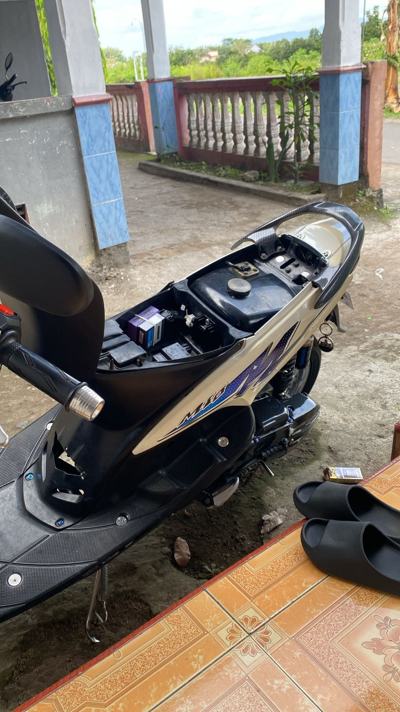
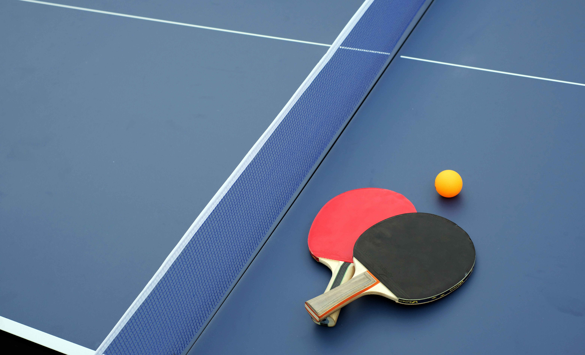
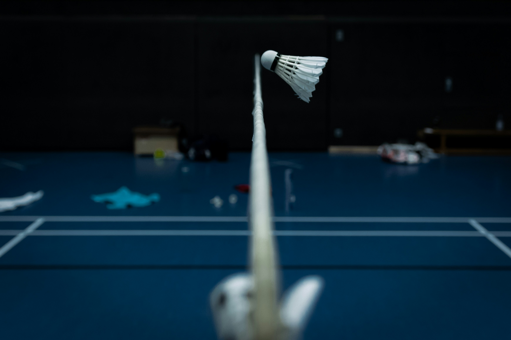

PROFIL PROFESIONAL

Muhammad Qoid Falahi
Sarjana Pendidikan Jasmani, Olahraga, dan Kesehatan & Calon Pendidik Informatika
Mengenal Lebih Dekat
Halo! Saya Muhammad Qoid Falahi, seorang pemuda yang berasal dari Ngawi sebuah kota di Jawa Timur yang terkenal dengan julukan "Kota Ramah". Ngawi mungkin tidak sepopuler kota-kota besar lainnya, tetapi keunikan dan kehangatan masyarakatnya selalu meninggalkan kesan mendalam bagi siapa saja yang berkunjung. Salah satu hal yang paling saya sukai dari Ngawi adalah keberadaan Benteng Pendem Van den Bosch, sebuah peninggalan sejarah yang megah dan menyimpan banyak cerita. Dari benteng inilah saya sering merenung, membayangkan masa lalu, dan menemukan inspirasi untuk masa depan.
Inspirasi saya untuk menjadi seorang guru profesional tumbuh dari pengamatan saya terhadap lingkungan sekitar Saya melihat bagaimana pendidikan dapat mengubah kehidupan seseorang, dan saya ingin menjadi bagian dari perubahan positif itu. Saya percaya bahwa setiap anak memiliki potensi yang luar biasa, dan sebagai guru, saya ingin membantu mereka menemukan dan mengembangkan potensi tersebut. Tujuan saya adalah menciptakan lingkungan belajar yang menyenangkan dan inovatif, di mana siswa tidak hanya belajar tentang mata pelajaran, tetapi juga tentang nilai-nilai kehidupan, kreativitas, dan kolaborasi. Saya ingin menjadi guru yang tidak hanya mengajar, tetapi juga menginspirasi dan membimbing.
"Pendidikan adalah senjata paling mematikan di dunia, karena dengan pendidikan, Anda dapat mengubah dunia."
- Nelson Mandela
Jejak Pendidikan
Pendidikan Profesi Guru (PPG) Prajabatan
Universitas Negeri Yogyakarta
2026 - SekarangSaat ini menempuh pendidikan profesi untuk bertransformasi menjadi guru yang profesional, inovatif, dan inklusif bagi peserta didik.
S1 Pendidikan Jasmani, Olahraga dan Kesehatan
Universitas Negeri Surabaya
2015 - 2019Lulus dengan gelar Sarjana Komputer (S.Pd). Dengan jurusan yang ditempuh yaitu Pedndidikan Jasmani, Olahraga dan Kesehatan
SMAN 2 Ngawi
Kabupaten Ogan Komering Ilir (OKI)
2012 - 2015Jurusan Ilmu Pengetahuan Alam
Hobi & Minat

🚗 Otomotif
Mengabadikan momen berharga dan keindahan sekitar melalui lensa kamera.

🏓 Tenis Meja
Membaca buku fiksi membantu saya meningkatkan empati dan meredakan stres.

🏸 Badminton
Menjelajahi tempat baru, menikmati pantai dan gunung untuk menyegarkan pikiran.